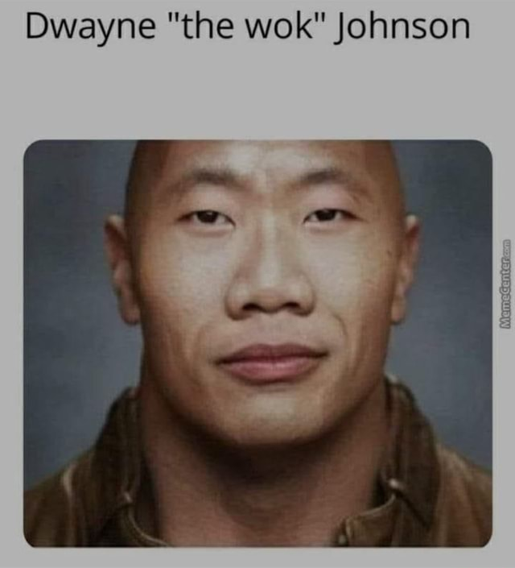

Top 1 = Super Idol: dit is de Meme die ik in de eerste pagina heb besproken.
Top 2 = Zhong Xi'na BingChilling: bij deze meme vind ik het heel grappig hoe John Cena in zijn auto Chinees praat en het Woord "Bingchilling" zegt. Hier zijn ook veel edits met geluidseffecten over gemaakt
Top 3 = The Wok met Social credit grind: In deze meme zie je Dwayne "the rock" jhonson een workout doen maar hier telt het als een manier om social credit score te verhogen. Dit wordt ook geholpen grappig te zijn met geluidseffecten van alarmen, Chinese robotstem en de president van China die hem belt. 